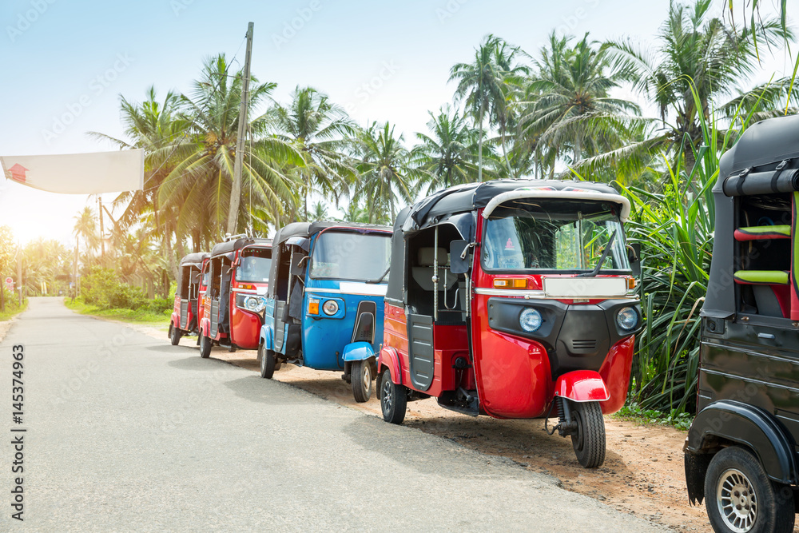
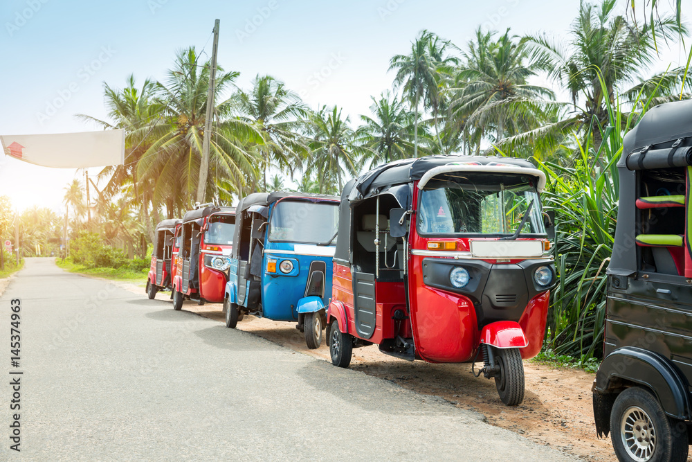

Witamy w Świecie Tuk-Tuków!
Odkryj fascynujący świat tych wyjątkowych pojazdów. Tuk-tuki są popularne na całym świecie, zwłaszcza w Azji i Afryce, i stanowią nieodłączny element codziennego życia wielu społeczności.
Odkryj fascynujący świat tych wyjątkowych pojazdów. Tuk-tuki są popularne na całym świecie, zwłaszcza w Azji i Afryce, i stanowią nieodłączny element codziennego życia wielu społeczności.

Tuk-tuki są napędzane głównie przez silniki spalinowe, jednak coraz częściej spotyka się modele elektryczne. Silniki spalinowe są małe i ekonomiczne, co czyni tuk-tuki przystępnymi i łatwymi w utrzymaniu pojazdami.
Najpopularniejsze marki produkujące tuk-tuki to Bajaj i Piaggio. Bajaj rozpoczął produkcję w latach 60., a tuk-tuki szybko zyskały popularność w Indiach i krajach ościennych.
„Ten silnik V8 wgniata w siedzenie.”
„Mały, łatwy do zaparkowania, szybki, ale niezbyt stabilny. 3/5”
„Tuk-tuk to świetny środek transportu! Ekonomiczny, szybki i zwinny w zatłoczonych miastach.”
„Straszny przeciag, nie polcam..”
„Idealny pojazd na krótkie dystanse. Silnik jest prosty, a części łatwo dostępne.”